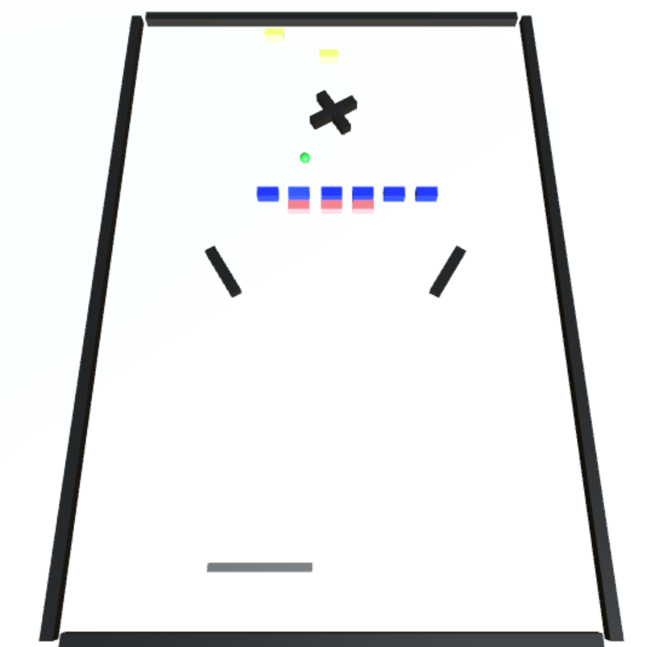

プロフィール
- IGSC所属
- INIAD 2期生
左から2番目の写真は2018年INIAD-fesの際、サークルの隅に展示した作品。
ゲームのタイトルは「Needle Hell」
unityで作りました
基本的に自分はunityとblenderで作品をつくっています
またそれに関連してvroid studioやblenderで3Dモデルを練習中です。
制作作品
ブロック崩し
サークルで１年生全員がブロック崩しを作ることになったので作ったものです。
写真だとわかりにくいですが奥の棒が回っています。
Needle Hell


タイトル下の写真にもあったINIAD-FESで出した作品です。
一応画像の２ステージ目のオブジェクトは自分で作りました。
あとキャラとそのアニメーションも自作です。
（動作がおかしいところが多々ありましたが...）
最終更新2019/4/13
あとキャラとそのアニメーションも自作です。
（動作がおかしいところが多々ありましたが...）